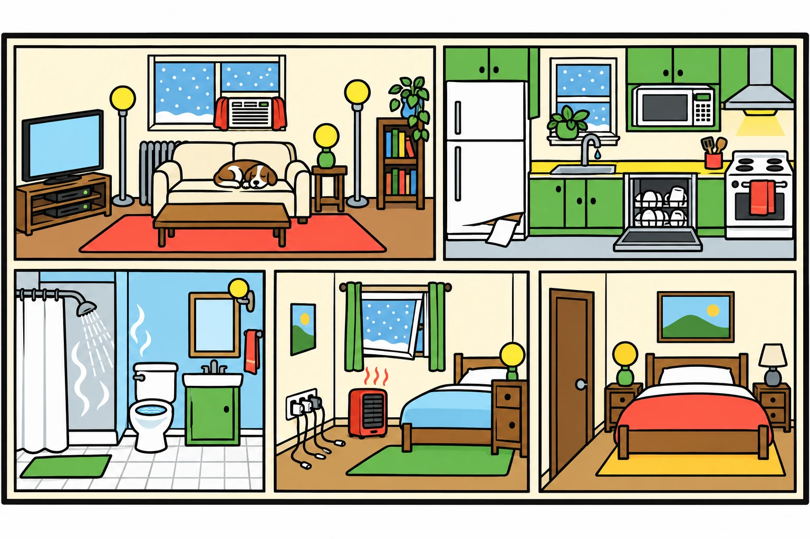

Reviews Lesson 4.4. Reviews Lesson 4.4 Day 2: the described-home audit and the twelve-fix ranking. Use it as the do now for Lesson 4.5 before the Greener Room Swap, or as a review before the two conservation items on the Home Safety and Conservation Quiz. About two and a half minutes. The end panel carries the phantom load, conservation, and efficiency definitions and the bulb math. Round 1 is a spot the waste on one picture of the Marchetti-Oyelaran apartment with 15 wastes and four decoys; Round 2 sorts the twelve fixes into free or costs money.

Waste Watch
A cutaway of the Marchetti-Oyelaran apartment appears. Tap everything wasting energy or water. Then the twelve fixes from the ranking table appear, and you sort each into free or costs money.
How to play
- Tap everything that is wasting energy or water.

Done
The ones to study:
Worth knowing by heart:
- Phantom load: power a device draws while off or in standby.
- Conservation: using less of a resource on purpose so it lasts. Efficiency: getting the same result with less.
- Watt-hours are pennies. Kilowatt-hours are dollars. 60 x 5 x 365 = 109,500 Wh = 109.5 kWh = $27.38 a year.
- One drip per second is about 5 gallons a day; 1,825 gallons a year, about 30 bathtubs.